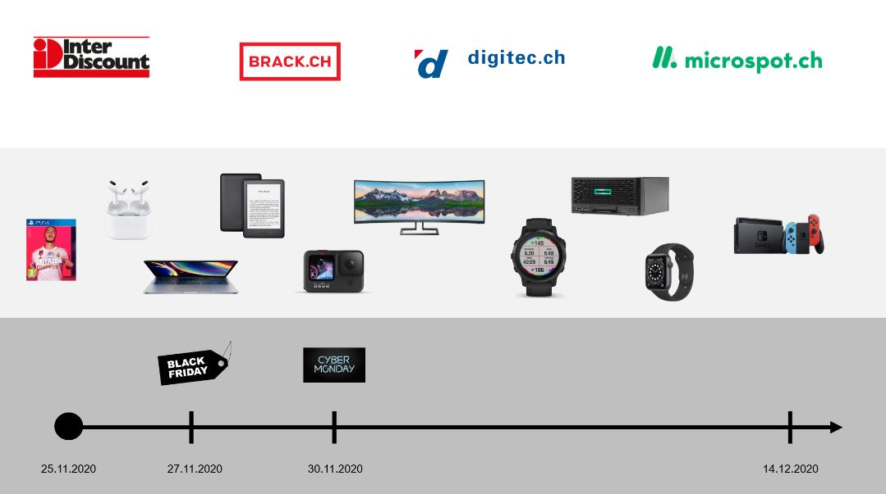
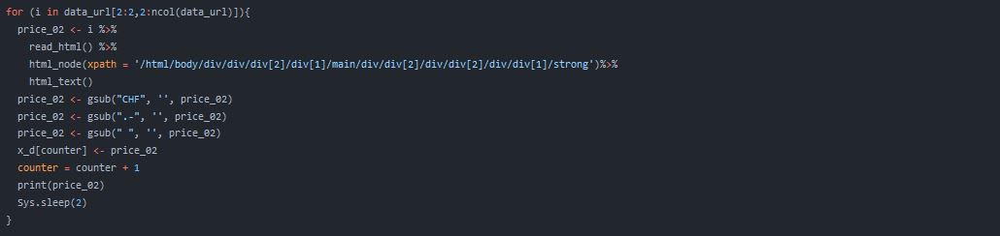
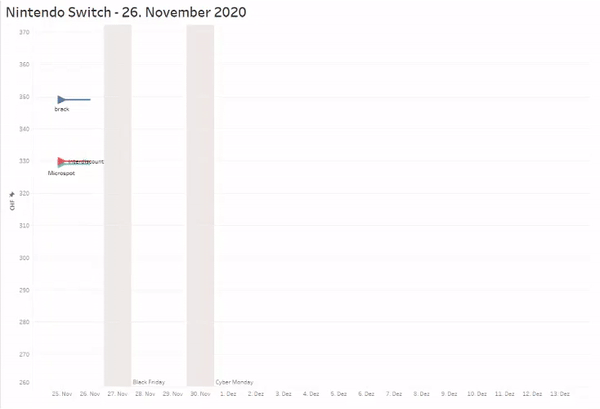

How do the prices of selected products fluctuate during the time before Christmas?
#R #Rvest #tidyverse #Automation #Tableau #E-Commere #BlackFriday

How do the prices of selected products fluctuate during the time before Christmas?
#R #Rvest #tidyverse #Automation #Tableau #E-Commere #BlackFriday
This project was conducted for a course at Project at Lucerne University of Applied Sciences and Arts.
I wanted to answer the question: How do the prices of selected products fluctuate during the time before Christmas? And are there other interesting patterns? To answer the questions I collected,transformed and visualised data. I used R in RStudio to programm the crawler.
For this project I crawled 10 different product prices from 4 different Swiss online-stores. Data was crawled from the 25.11.2020 to the 14.12.2020. The R code can be found here: Crawler.R on Github.
I used X-Path selectors, to correctly select the data needed.
To get the most insights from the data, I wanted that the data is crawled every hour. Since I did not want to manually start the R-Script, I had to automate it. I created a Rexec-File and created a Microsoft Task. With the Rexec-File and the Microsoft Task, I was able to focus on the data analysis and visualisation. The R code can be found here: Rexec-File on Github.

I analysed the data with Tableau. Microspot was the price leader in 119 cases of 217. Followed by Digitec (55) , Brack.ch (32) and Interdiscount (11) .
This GIF below shows data for a Nintendo Switch for the observed online-shops. The blue arrow represents the data for Brack.ch, which did not have any changes in the price. The orange arrow represents digitec.ch, which changed 4 times. The red arrow represents Interdiscount, which changed once. The green arrow represents microsport, which changes multiple times. The chart was created with Tableau Desktop and was animated as a GIF.
During the observation time (25.11.20 - 14.12.20) I detected 112 price changes. The overall chart decreases CHF 263.40. This is a relative decrease of 1.157%.
On Black Friday 9 out of 40 items decreased its price. The highest absolute decrease was CHF 330.-. 42% was the highest relative decrease.
On Cyber Monday I did not detect any price decreases. 8 out of 40 items increased its price. The highest price increase was 100%.